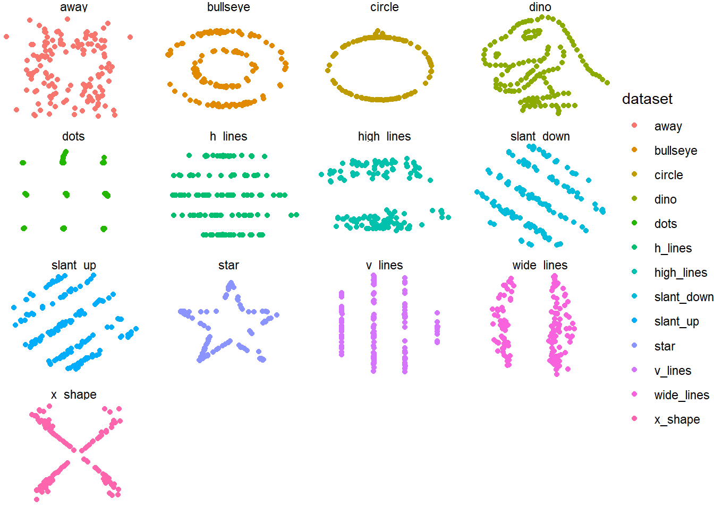
R-tistic Insights- Visualising your data in R

A word to the wise
Can anyone guess what statistical phenomenon is being observed here?
datasaurus_dozen %>% group_by(dataset) %>%
summarize( mean(x), mean(y), var(x), var(y), cor(x,y)) %>%
kable(digits=3) %>% kable_styling(bootstrap_options = c("striped"), font_size=17)| dataset | mean(x) | mean(y) | var(x) | var(y) | cor(x, y) |
|---|---|---|---|---|---|
| away | 54.266 | 47.835 | 281.227 | 725.750 | -0.064 |
| bullseye | 54.269 | 47.831 | 281.207 | 725.533 | -0.069 |
| circle | 54.267 | 47.838 | 280.898 | 725.227 | -0.068 |
| dino | 54.263 | 47.832 | 281.070 | 725.516 | -0.064 |
| dots | 54.260 | 47.840 | 281.157 | 725.235 | -0.060 |
| h_lines | 54.261 | 47.830 | 281.095 | 725.757 | -0.062 |
| high_lines | 54.269 | 47.835 | 281.122 | 725.763 | -0.069 |
| slant_down | 54.268 | 47.836 | 281.124 | 725.554 | -0.069 |
| slant_up | 54.266 | 47.831 | 281.194 | 725.689 | -0.069 |
| star | 54.267 | 47.840 | 281.198 | 725.240 | -0.063 |
| v_lines | 54.270 | 47.837 | 281.232 | 725.639 | -0.069 |
| wide_lines | 54.267 | 47.832 | 281.233 | 725.651 | -0.067 |
| x_shape | 54.260 | 47.840 | 281.231 | 725.225 | -0.066 |
Visualisation in key in understanding the underlying data and in key in telling a story.
Danger
Position is the most powerful way to demonstrate differences
Pie charts/ 3D charts are bad
Always design a visualization with a question in mind
ggplot2 holds the title of the most commonly used data visualization package in R. Its central function, ggplot(), forms the backbone of this package. The package, including its resulting figures, are often casually referred to as “ggplot” and the figures it produces as “ggplots”. The prefix “gg” stands for the “grammar of graphics”, which underpins the structure of the images generated. A host of additional R packages exists to expand the capabilities of ggplot2.
In contrast to the base R plotting syntax, ggplot2 introduces a unique syntax that might pose a learning challenge initially. It usually demands data to be organized in a way that aligns well with the tidyverse, making these packages effective when used together.
Over the next 2.5 hours we’ll walk through the basics of plotting with ggplot2.
Tip
This session will be a primer. Head on to this great resources to learn more:
There are several great tips on the R Epi Handbook
Cheat sheets are hacks. The invaluable ggplot data visualization cheat sheet can be downloaded from the RStudio website.
For those seeking innovative ideas for data visualization, we recommend exploring websites such as the R graph gallery and Data-to-viz.
Prepare for liftoff
Load packages
Lets get some important packages loaded
required_packages <- c("tidyverse", "rio", "here", "stringr", "lubridate", "ggforce")
not_installed <- required_packages[!(required_packages %in% installed.packages()[ , "Package"])]
if(length(not_installed)) install.packages(not_installed)
suppressWarnings(lapply(required_packages, require, character.only = TRUE))Loading required package: rioLoading required package: herehere() starts at C:/R/nih_training/StatsComputingR_sbdr2023Loading required package: ggforceImporting some data
For the purposes of this session lets utilise the Malaysian COVID-19 deaths linelinest maintained by the Ministry of Health on their Github page. Codes for each column are as follows:
date: yyyy-mm-dd format; date of deathdate_announced: date on which the death was announced to the public (i.e. registered in the public linelist)date_positive: date of positive sampledate_doseN: date of the individual’s first/second/third dose (if any)brandN:p= Pfizer,s= Sinovac,a= AstraZeneca,c= Cansino,m= Moderna,h= Sinopharm,j= Janssen,u= unverified (pending sync with VMS)state: state of residenceage: age as an integer; note that it is possible for age to be 0, denoting infants less than 6 months oldmale: binary variable with 1 denoting male and 0 denoting femalebid: binary variable with 1 denoting brought-in-dead and 0 denoting an inpatient deathmalaysian: binary variable with 1 denoting Malaysian and 0 denoting non-Malaysiancomorb: binary variable with 1 denoting that the individual has comorbidities and 0 denoting no comorbidities declared
Lets call in the data:
c19_df <- read.csv("https://raw.githubusercontent.com/MoH-Malaysia/covid19-public/main/epidemic/linelist/linelist_deaths.csv")Check and clean
We can have a very quick look at the data structure using the skim function from skimr.
skimr::skim(c19_df)| Name | c19_df |
| Number of rows | 37152 |
| Number of columns | 15 |
| _______________________ | |
| Column type frequency: | |
| character | 10 |
| numeric | 5 |
| ________________________ | |
| Group variables | None |
Variable type: character
| skim_variable | n_missing | complete_rate | min | max | empty | n_unique | whitespace |
|---|---|---|---|---|---|---|---|
| date | 0 | 1 | 10 | 10 | 0 | 1004 | 0 |
| date_announced | 0 | 1 | 10 | 10 | 0 | 1000 | 0 |
| date_positive | 0 | 1 | 10 | 10 | 0 | 999 | 0 |
| date_dose1 | 0 | 1 | 0 | 10 | 22437 | 298 | 0 |
| date_dose2 | 0 | 1 | 0 | 10 | 28034 | 267 | 0 |
| date_dose3 | 0 | 1 | 0 | 10 | 35719 | 161 | 0 |
| brand1 | 0 | 1 | 0 | 16 | 22437 | 8 | 0 |
| brand2 | 0 | 1 | 0 | 16 | 28034 | 7 | 0 |
| brand3 | 0 | 1 | 0 | 16 | 35719 | 6 | 0 |
| state | 0 | 1 | 5 | 17 | 0 | 16 | 0 |
Variable type: numeric
| skim_variable | n_missing | complete_rate | mean | sd | p0 | p25 | p50 | p75 | p100 | hist |
|---|---|---|---|---|---|---|---|---|---|---|
| age | 0 | 1 | 62.65 | 16.59 | 0 | 51 | 64 | 75 | 130 | ▁▃▇▃▁ |
| male | 0 | 1 | 0.58 | 0.49 | 0 | 0 | 1 | 1 | 1 | ▆▁▁▁▇ |
| bid | 0 | 1 | 0.21 | 0.41 | 0 | 0 | 0 | 0 | 1 | ▇▁▁▁▂ |
| malaysian | 0 | 1 | 0.89 | 0.31 | 0 | 1 | 1 | 1 | 1 | ▁▁▁▁▇ |
| comorb | 0 | 1 | 0.79 | 0.41 | 0 | 1 | 1 | 1 | 1 | ▂▁▁▁▇ |
So we can already see that unvaccinated individuals are coded here as EMPTY cells- lets change these dates to NA and their brands to Unvaccinated status. We can leave everything else as it is for now.
c19_df <- c19_df %>%
mutate(across(where(is.character), na_if, ""),#look at all character columns and change "" empty cells to NA
across(contains("brand"), ~replace_na(na_if(.,"NA"),"unvaccinated")),#replace all NA cells in brand columns to unvaccinated
across(contains("date"), ~as.Date(., format = "%Y-%m-%d")),#change character to dates\ fromat
duration_toDeath=as.numeric(date-date_positive)) #create a rabdom second continuous variableLets also create a aggregated set counting deaths by epidemiologic weeks
week_df <- c19_df %>% select(state, date, age) %>%
mutate(age_cat= ifelse(age<20, "<19",
ifelse(age>59, ">60", "20-59"))) %>%
select(-age) %>%
group_by(state, age_cat, date) %>%
summarise (deaths=n()) %>% ungroup()`summarise()` has grouped output by 'state', 'age_cat'. You can override using
the `.groups` argument.Any idea what is wrong with the dataset produced above- take a minute!
Try opening the dataset using View(week_df) .
Well if you still don’t know try and figure out what the code below is doing.
week_df <- week_df %>%
group_by(state, age_cat) %>%
complete(date = seq(min(date), max(date), by="day"), fill = list(deaths = 0))“Grammar of Graphics” via ggplot2
ggplot2 plotting functions are structured in a layered approach, with different components of the plot added sequentially using the plus (+) symbol. This methodology results in a layered plot object which can be saved, altered, displayed, or exported as needed.
Even though ggplot objects can get intricate, the usual layering sequence is as follows:
Start with the fundamental ggplot() function - this initializes the ggplot and paves the way for other functions to be appended using the + symbol. Generally, the data set to be used is declared in this function.
Add geometry layers, denoted as “geom” layers - these functions represent the data in various visual forms (shapes), like a bar chart, line graph, scatter plot, histogram, or even a mix of these. These functions are recognizable by their prefix “geom_”.
Include design components to the plot such as labels for axes, title, fonts, sizes, color patterns, legends, or axis rotation.
An example of basic code structure is provided below. Detailed explanation of each segment will follow in the succeeding sections.
# plot data from my_data columns as red points
ggplot(data = my_data)+ # use the dataset "my_data"
geom_point( # add a layer of points (dots)
mapping = aes(x = col1, y = col2), # "map" data column to axes
color = "red")+ # other specification for the geom
labs()+ # here you add titles, axes labels, etc.
theme() # here you adjust color, font, size etc of non-data plot elements (axes, title, etc.) A breakdown of each part of the GG is as follows:
ggplot(): The ggplot2 visualization begins with theggplot()command, acting as a blank canvas for subsequent layers. It usually incorporates the data = argument, setting the default dataset. The command ends with a +, remaining “open” for additions. The plot executes only when a final layer is added without a +.geoms: A ggplot2 plot’s foundation, created withggplot(), needs added geometry layers (“geoms”) to visualize data through shapes like bar plots or histograms. Functions starting with geom_, also known asgeom_XXXX(), create these shapes. Common ones include
geom_histogram()- Histogramgeom_bar()orgeom_col()- Bar chartsgeom_boxplot()- Boxplotsgeom_point()- Scatter plotsgeom_line()orgeom_path()- Line chartsgeom_smooth()- Trend linesTipWith >40 geoms in ggplot2 and many more developed by users, various plots can be created, as seen in the ggplot2 gallery.
Mapping and aesthetics
In ggplot2, geometry functions require data mapping instructions for plot components like axes or shape colors, typically involving the x-axis and possibly the y-axis. This is done with the mapping = aes() argument, such as mapping = aes(x = col1, y = col2). For instance, the geom_point() function inherits the axis-column assignments from the preceding ggplot() command and visually represents those relationships as points on the canvas.
Important
Aesthetic mapping within mapping = aes() can be written in several places in your plotting commands and can even be written more than once. Just remember mapping at the top command leads to structure being inherited below it.
ggplot(data = c19_df,
mapping = aes(x = age, y = duration_toDeath))+
geom_point()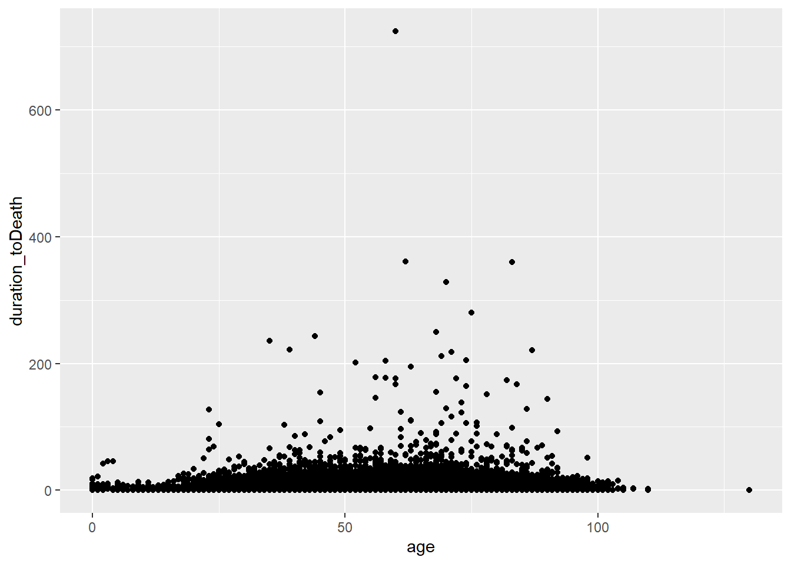
or mapped in the geom
ggplot(data = c19_df)+
geom_point(mapping = aes(x = age, y = duration_toDeath))
A range of aesthetics can be defined with each geom_XXXX with come not being available in others. Several common ones include:
shape =Display a point withgeom_point()as a dot, star, triangle, or square…
fill =The interior color (e.g. of a bar or boxplot)
color =The exterior line of a bar, boxplot, etc., or the point color if usinggeom_point()
size =Size (e.g. line thickness, point size)
alpha =Transparency (1 = opaque, 0 = invisible)
binwidth =Width of histogram bins
width =Width of “bar plot” columns
linetype =Line type (e.g. solid, dashed, dotted)
Histograms & Density charts
Histograms, unlike bar charts, depict the distribution of a continuous variable with adjoining bars, representing grouped data ranges. Created using geom_histogram(), they require only one column input and divide the data into ‘bins’ based on numerical values. The number of bins or binwidth can be specified, otherwise, an optimal value is suggested.
# A) Regular histogram
ggplot(data = c19_df, aes(x = age))+ # provide x variable
geom_histogram()+
labs(title = "A) Default histogram (30 bins)")`stat_bin()` using `bins = 30`. Pick better value with `binwidth`.# B) More bins
ggplot(data = c19_df, aes(x = age))+ # provide x variable
geom_histogram(bins = 50)+
labs(title = "B) Set to 50 bins")
# C) Fewer bins
ggplot(data = c19_df, aes(x = age))+ # provide x variable
geom_histogram(bins = 5)+
labs(title = "C) Set to 5 bins")
# D) More bins
ggplot(data = c19_df, aes(x = age))+ # provide x variable
geom_histogram(binwidth = 1)+
labs(title = "D) binwidth of 1")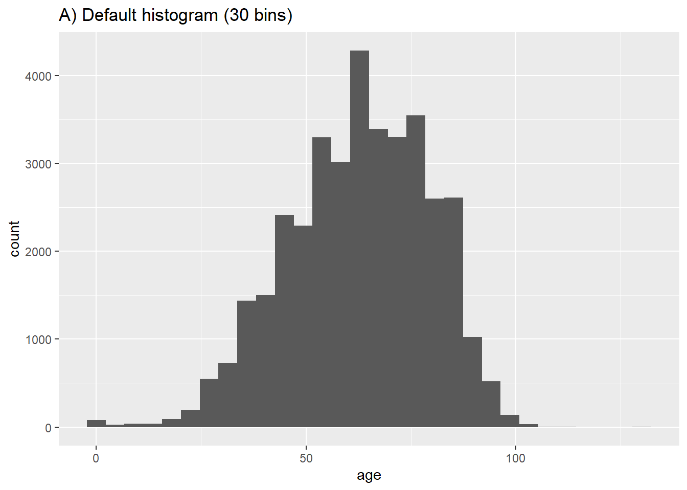
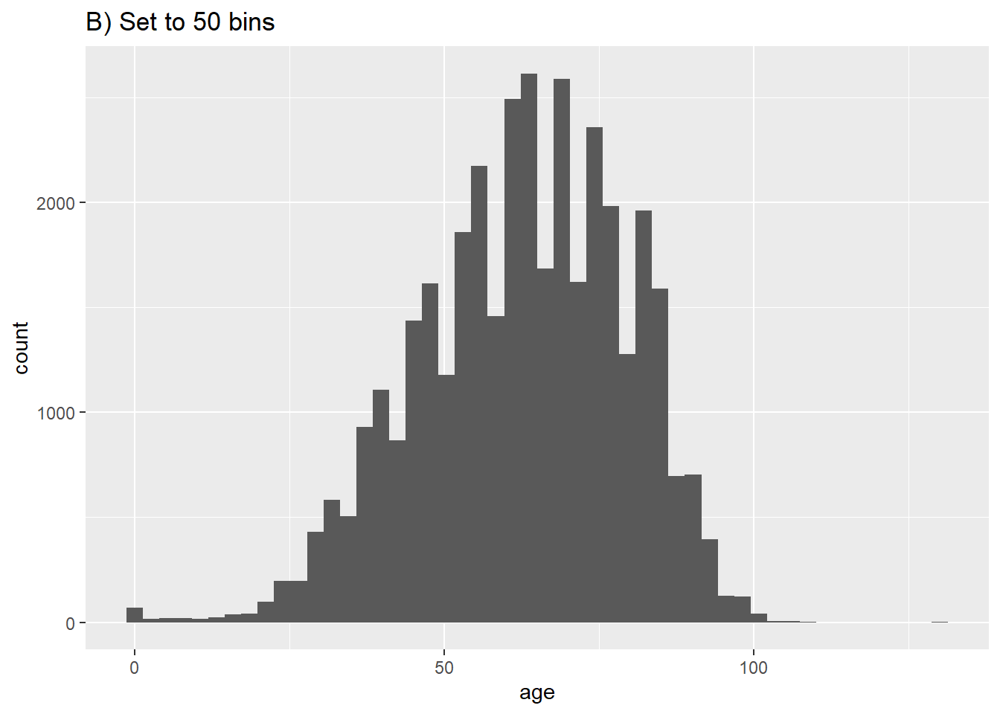
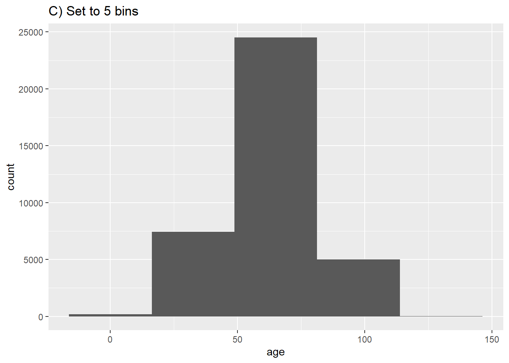
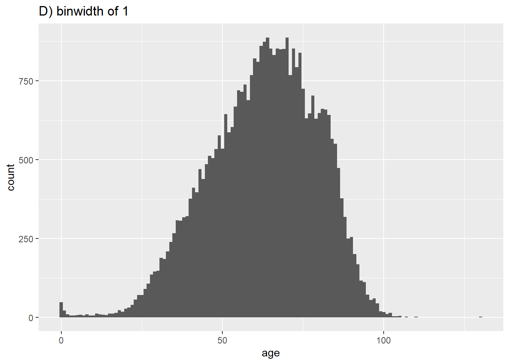
To get smoothed proportions, you can use geom_density():
# Frequency with proportion axis, smoothed
ggplot(data = c19_df, mapping = aes(x = age)) +
geom_density(size = 1, alpha = 0.2)+
labs(title = "Proportional density")Warning: Using `size` aesthetic for lines was deprecated in ggplot2 3.4.0.
ℹ Please use `linewidth` instead.# Stacked frequency with proportion axis, smoothed
ggplot(data = c19_df, mapping = aes(x = age, fill = factor(malaysian))) +
geom_density(size = 1, alpha = 0.2, position = "stack")+
labs(title = "'Stacked' proportional densities")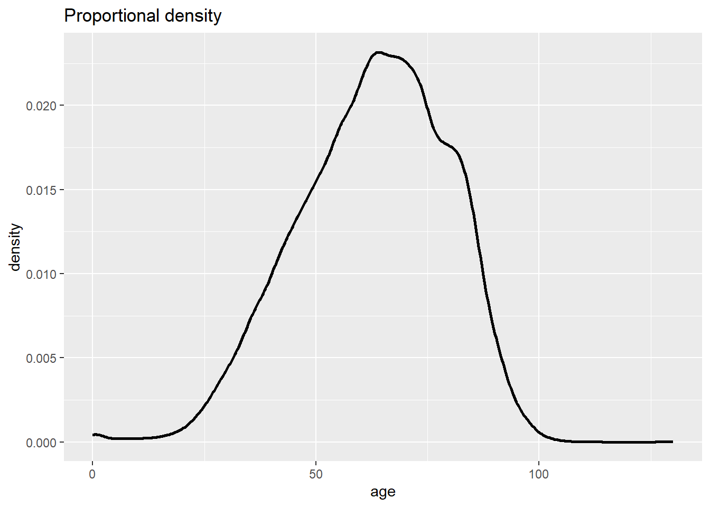
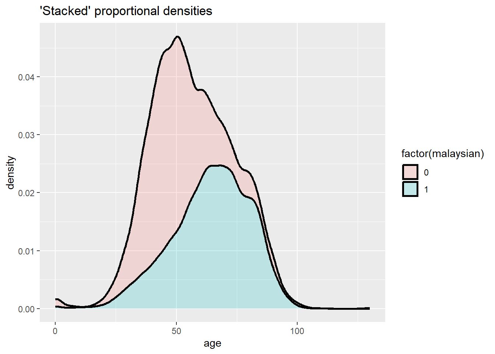
A “stacked” histogram of continuous data can be created either by using geom_histogram() with the fill = argument within aes() assigned to the grouping column, or through geom_freqpoly(). Setting y = after_stat(density) allows proportion representation of all values per group. Note the difference between color = and fill =.
# "Stacked" histogram
ggplot(data = c19_df, mapping = aes(x = age, fill = factor(malaysian))) +
geom_histogram(binwidth = 2)+
labs(title = "'Stacked' histogram")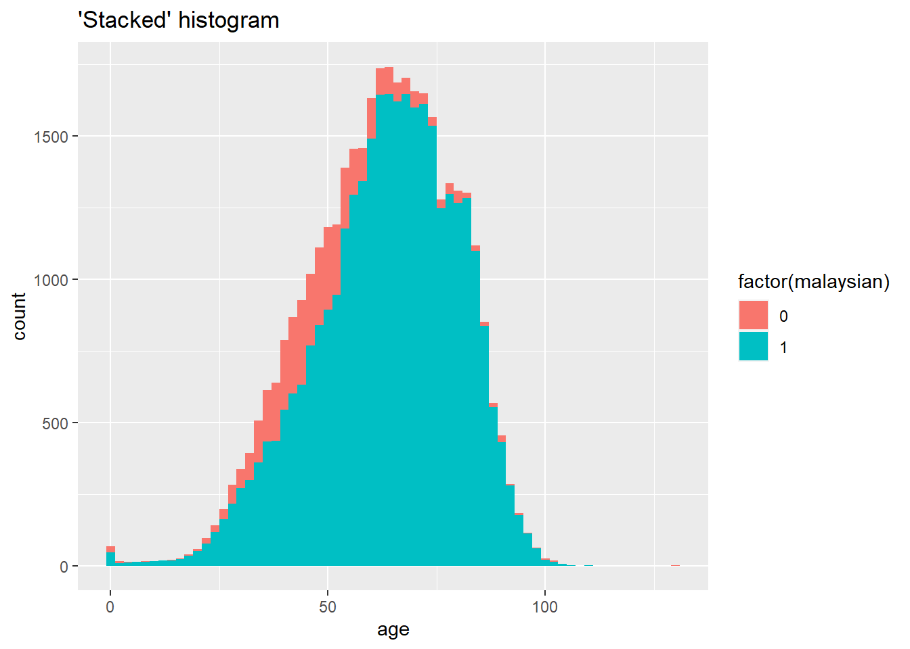
# Frequency
ggplot(data = c19_df, mapping = aes(x = age, color = factor(malaysian))) +
geom_freqpoly(binwidth = 2, size = 2)+
labs(title = "Freqpoly")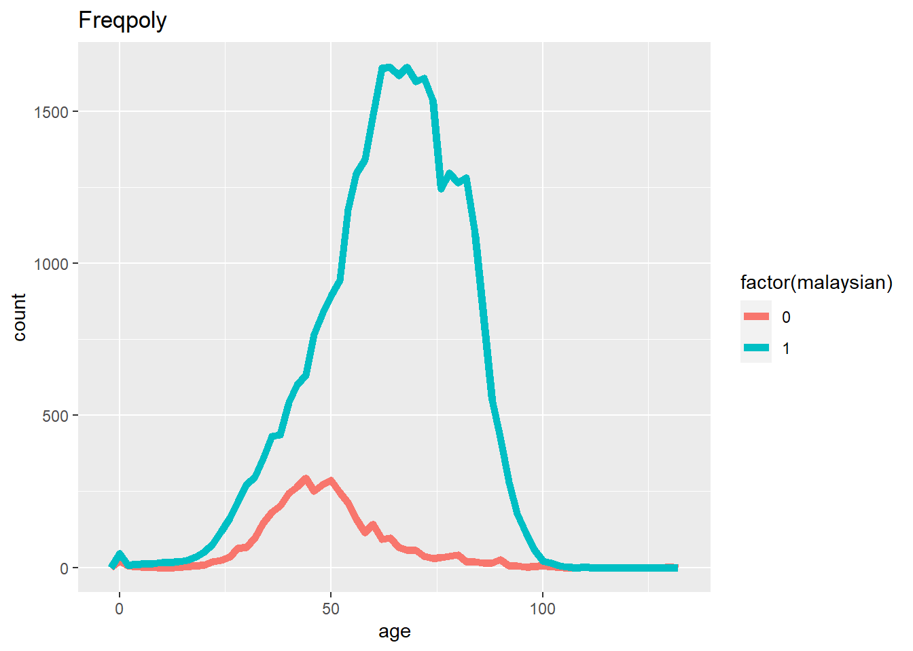
# Frequency with proportion axis
ggplot(data = c19_df, mapping = aes(x = age, y = after_stat(density), color = factor(malaysian))) +
geom_freqpoly(binwidth = 5, size = 2)+
labs(title = "Proportional freqpoly")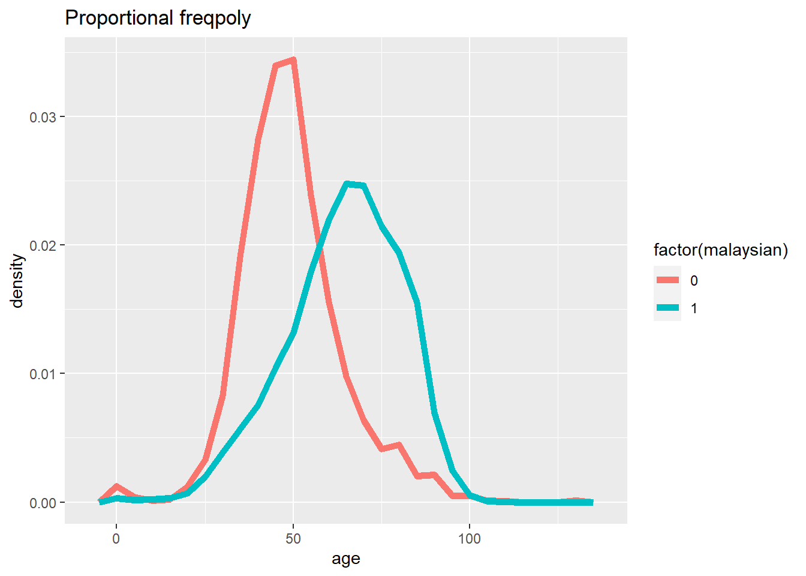
# Frequency with proportion axis, smoothed
ggplot(data = c19_df, mapping = aes(x = age, y = after_stat(density), fill = factor(malaysian))) +
geom_density(size = 2, alpha = 0.2)+
labs(title = "Proportional, smoothed with geom_density()")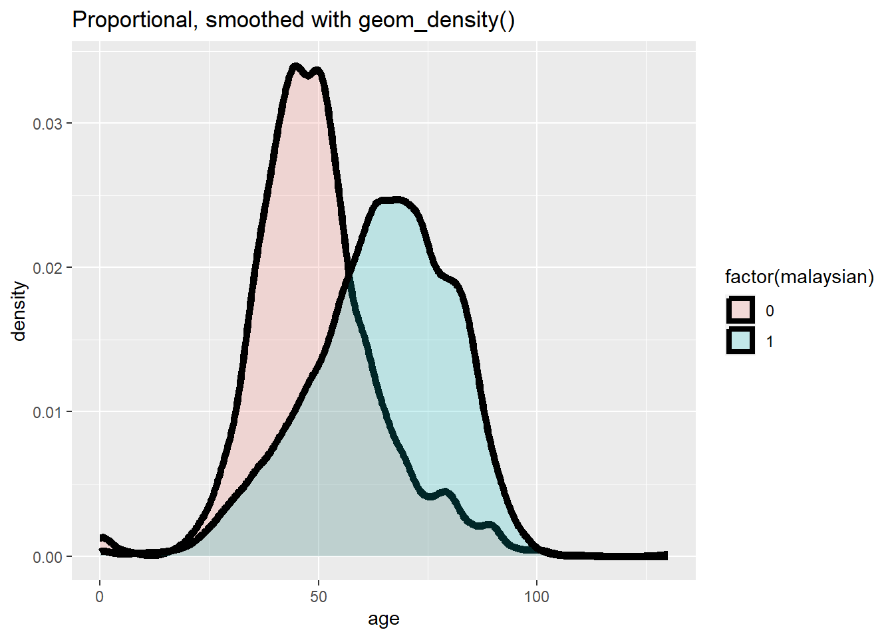
Box-plots
geom_boxplot() in ggplot2 creates box plots by mapping only one axis (x or y) within aes(). Box plots per group are made by assigning the grouping column to the unassigned axis.
Be aware, NA values appear as separate plots unless removed. Optional aesthetics like color can be used.
# A) Overall boxplot
ggplot(data = c19_df)+
geom_boxplot(mapping = aes(y = age))+ # only y axis mapped (not x)
labs(title = "A) Overall boxplot")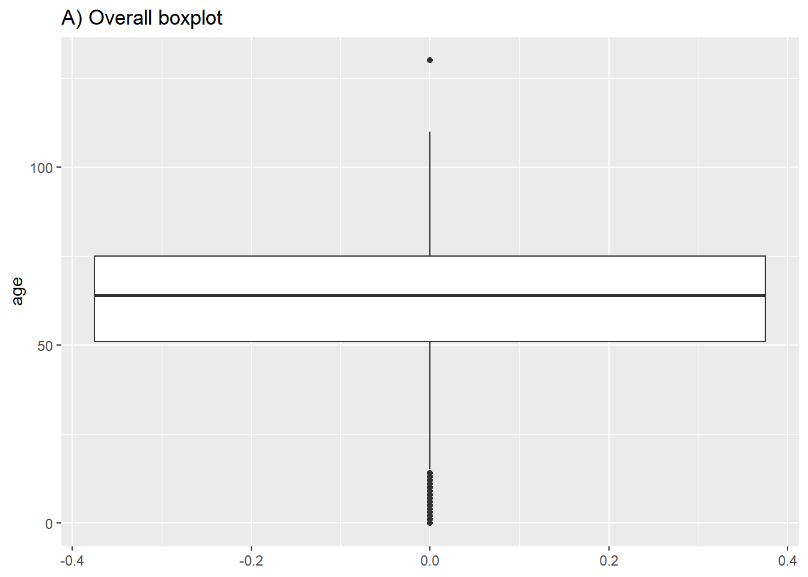
# B) Box plot by group
ggplot(data = c19_df, mapping = aes(y = age, x = malaysian, fill = factor(malaysian))) +
geom_boxplot()+
theme(legend.position = "none")+ # remove legend (redundant)
labs(title = "B) Boxplot by nationality") 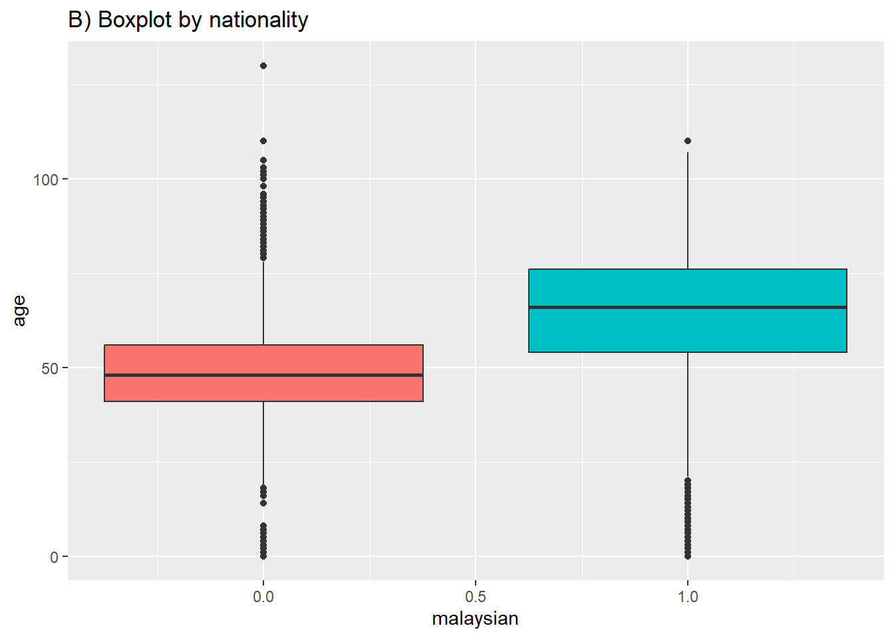
Violin, jitter and sina-plots
Below is code for creating violin plots (geom_violin) and jitter plots (geom_jitter) to show distributions. You can specify that the fill or color is also determined by the data, by inserting these options within aes().
# A) Jitter plot by group
ggplot(data = c19_df, # remove missing values
mapping = aes(y = age, # Continuous variable
x = malaysian, # Grouping variable
color = factor(malaysian)))+ # Color variable
geom_jitter()+ # Create the violin plot
labs(title = "A) jitter plot by nationality") 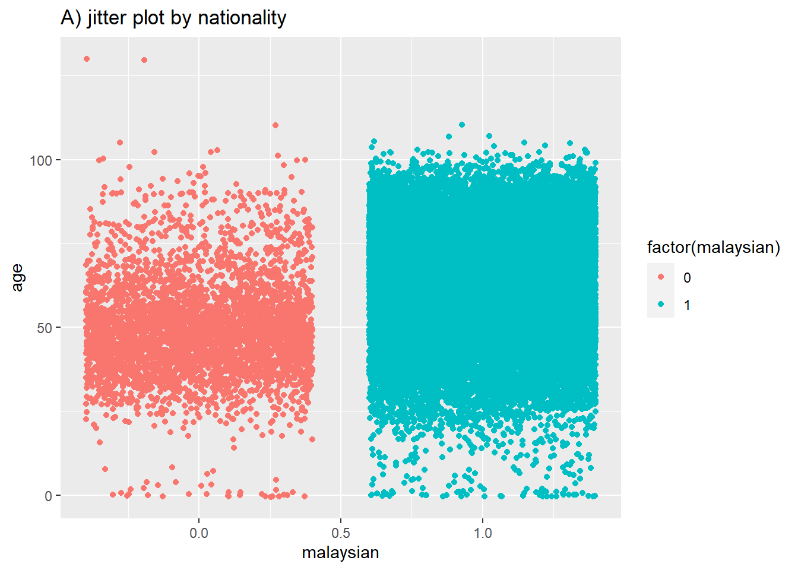
# B) Violin plot by group
ggplot(data = c19_df, # remove missing values
mapping = aes(y = age, # Continuous variable
x = malaysian, # Grouping variable
fill = factor(malaysian)))+ # fill variable (color)
geom_violin()+ # create the violin plot
labs(title = "B) violin plot by nationality") 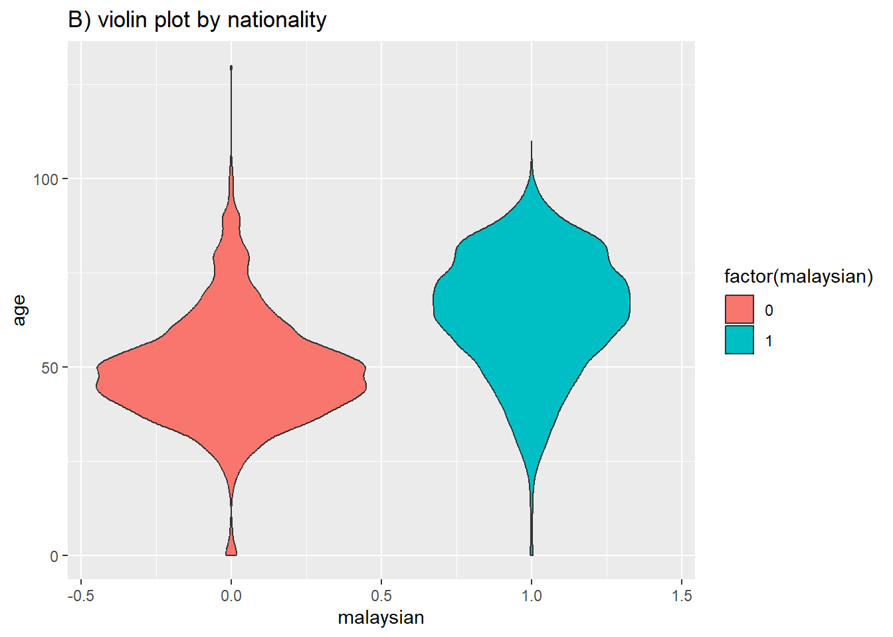
i like the violin plot for distributions but Sina plots really take the cake.
# A) Sina plot by group
ggplot(
data = c19_df,
aes(y = age, # numeric variable
x = malaysian)) + # group variable
geom_violin(
aes(fill = factor(malaysian)), # fill (color of violin background)
color = "white", # white outline
alpha = 0.2)+ # transparency
geom_sina(
size=1, # Change the size of the jitter
aes(color = factor(malaysian)))+ # color (color of dots)
scale_fill_manual( # Define fill for violin background by death/recover
values = c("1" = "#bf5300",
"0" = "#11118c")) +
scale_color_manual( # Define colours for points by death/recover
values = c("1" = "#bf5300",
"0" = "#11118c")) +
theme_minimal() + # Remove the gray background
theme(legend.position = "none") + # Remove unnecessary legend
labs(title = "B) violin and sina plot by nationality, with extra formatting") 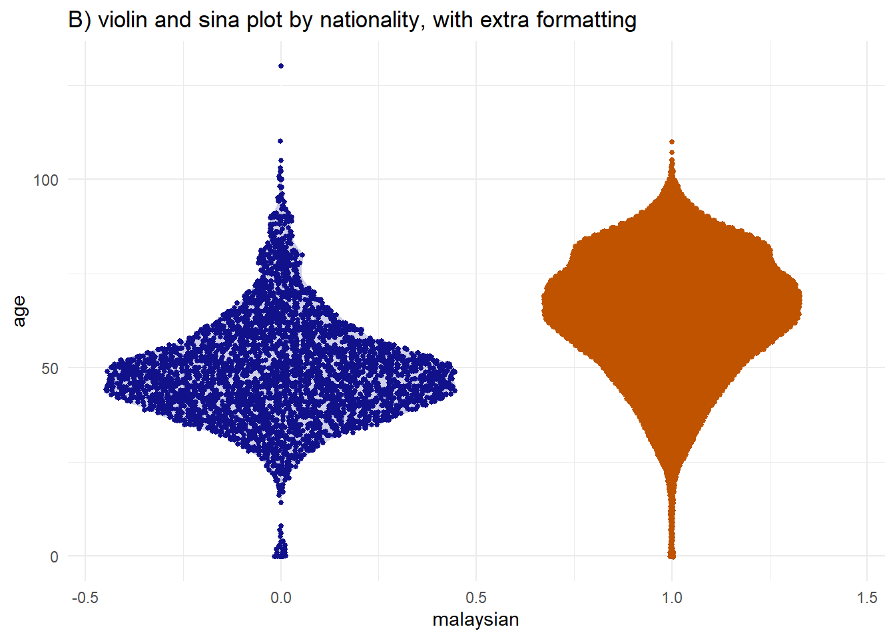
Line chart
Simple line charts are great and can be used like scatterplots which we already know the basics and of course line charts- we can of course look at 2 continuous variables in this case.
ggplot(data=week_df) +
geom_line(mapping=aes(x=date, y=deaths, col=state)) 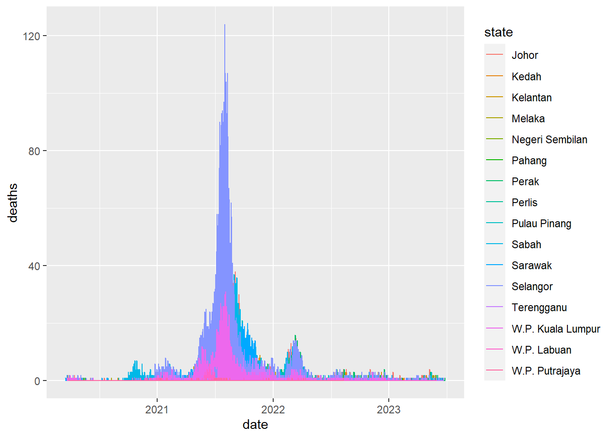
ggplot(data=week_df %>% filter(date>as.Date("2022-12-31"))) +
geom_line(mapping=aes(x=date, y=deaths, col=state)) 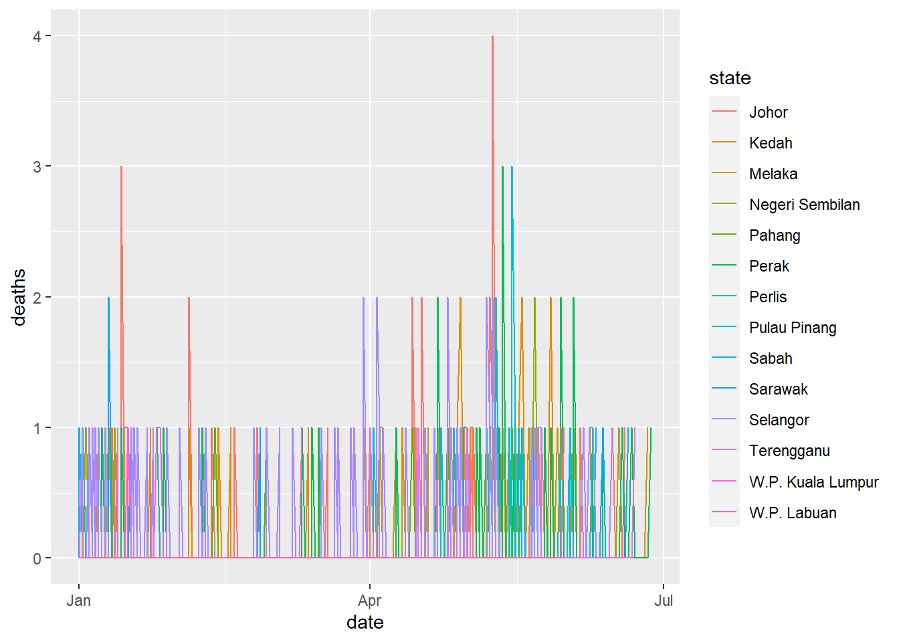
Heat maps
My favorite plot- this one is super informative and flexible being able to storytell upt to 2 continuous variables in one go. Lets try an example
First get the data long as we saw earlier and on information we wish to check:
bid_df <- c19_df %>% select(malaysian, bid, date) %>%
group_by(malaysian, date) %>%
summarise (deaths=n(),
bid=sum(bid==1)) %>%
mutate(bid_rate=(bid/deaths)*100) %>%
complete(date = seq(min(date), max(date), by="day"), fill = list(bid_rate = 0))`summarise()` has grouped output by 'malaysian'. You can override using the
`.groups` argument.ggplot(data = bid_df) + # use long data, with proportions as Freq
geom_tile( # visualize it in tiles
aes(
x = date, # x-axis is case age
y = malaysian, # y-axis is infector age
fill = bid_rate))+ # color of the tile is the Freq column in the data
scale_fill_gradient( # adjust the fill color of the tiles
low = "blue",
high = "orange")+
labs( # labels
x = "Date",
y = "Nationality",
title = "Where are the deaths occuring",
subtitle = "Frequency BID deaths by nationality",
fill = "Proportion of\n all deaths" # legend title
)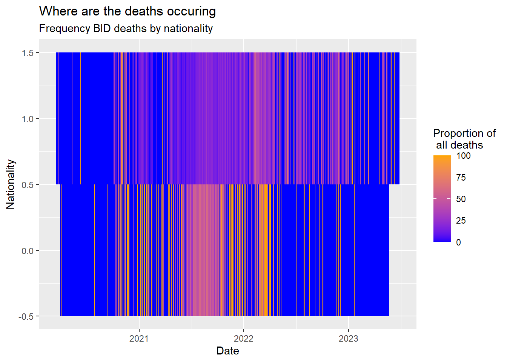
Bar chart
geom_bar() in ggplot2 creates bar plots where the height represents the count of relevant rows. It needs only one axis assignment, typically the x-axis. Stacked bars can be achieved by adding a fill = column assignment within aes(). The unassigned axis, titled “count”, corresponds to row numbers. Plot orientation and factor levels order can be manipulated for better visuals.
# A) Outcomes in all cases
ggplot(c19_df) +
geom_bar(aes(y = fct_rev(state)), width = 0.7) +
theme_minimal()+
labs(title = "A) Number of deaths by state",
y = "State")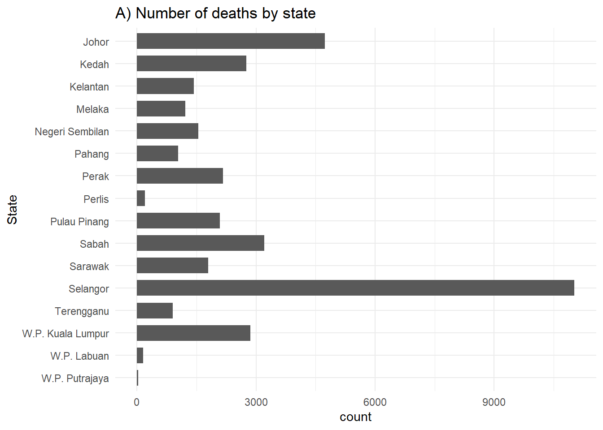
# B) Outcomes in all cases by state
ggplot(c19_df) +
geom_bar(aes(y = fct_rev(state), fill = factor(malaysian)), width = 0.7) +
theme_minimal()+
theme(legend.position = "bottom") +
labs(title = "B) Number of dead by nationality and state",
y = "State")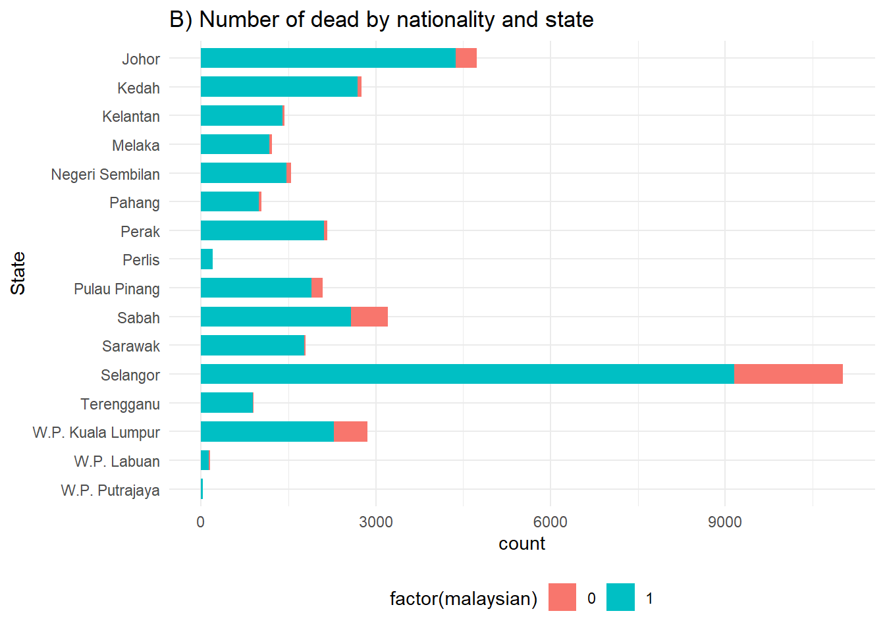
geom_col() in ggplot2 creates bar plots with height reflecting pre-calculated data values, usually aggregated counts or proportions, using both axes assignments.
Lets calculate the proportions
state_outcomes <- c19_df %>%
mutate(status=ifelse(malaysian==1&bid==1, "Non-Malaysian BID",
ifelse(malaysian==0&bid==1, "Malaysian BID",
ifelse(malaysian==1&bid==0, "Non-Malaysian Hospital", "Malaysian Hospital")))) %>%
count(state, status) %>% # get counts by state and outcome
group_by(state) %>% # Group so proportions are out of state total
mutate(proportion = n/sum(n)*100) # calculate proportions of state total
head(state_outcomes) # Preview data# A tibble: 6 × 4
# Groups: state [2]
state status n proportion
<chr> <chr> <int> <dbl>
1 Johor Malaysian BID 162 3.42
2 Johor Malaysian Hospital 204 4.30
3 Johor Non-Malaysian BID 550 11.6
4 Johor Non-Malaysian Hospital 3824 80.7
5 Kedah Malaysian BID 28 1.02
6 Kedah Malaysian Hospital 42 1.52We then create the ggplot with some added formatting:
Axis flip: Swapped the axis around with
coord_flip()so that we can read the hospital names.Columns side-by-side: Added a
position = "dodge"argument so that the bars for death and recover are presented side by side rather than stacked. Note stacked bars are the default.Column width: Specified ‘width’, so the columns are half as thin as the full possible width.
Column order: Reversed the order of the categories on the y axis so that ‘Other’ and ‘Missing’ are at the bottom, with
scale_x_discrete(limits=rev). Note that we used that rather thanscale_y_discretebecause hospital is stated in thexargument ofaes(), even if visually it is on the y axis. We do this because Ggplot seems to present categories backwards unless we tell it not to.
Other details: Labels/titles and colours added within
labsandscale_fill_colorrespectively.
# Outcomes in all cases by hospital
ggplot(state_outcomes) +
geom_col(
mapping = aes(
x = proportion, # show pre-calculated proportion values
y = fct_rev(state), # reverse level order so missing/other at bottom
fill = factor(status)), # stacked by outcome
width = 0.5)+ # thinner bars (out of 1)
theme_minimal() + # Minimal theme
theme(legend.position = "bottom")+
labs(subtitle = "Number of COVID-19 deaths in Malaysia, by state",
fill = "Outcome", # legend title
y = "Count", # y axis title
x = "State")+ # x axis title
scale_fill_manual( # adding colors manually
values = c("Non-Malaysian BID" = "#CE0200",
"Malaysian BID" = "#e5e500",
"Non-Malaysian Hospital" = "#3B1c8C",
"Malaysian Hospital" = "#21908D")) 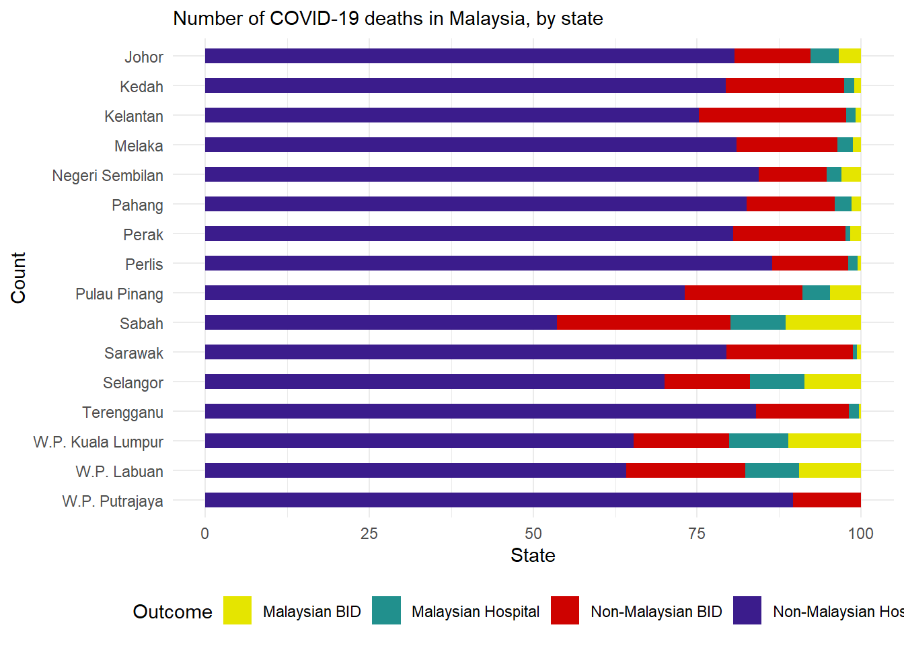
Static vs Scaled
Aesthetics can be assigned values in two ways:
Assigned a static value (e.g. color = “blue”) to apply across all plotted observations
Assigned to a column of the data (e.g. color = hospital) such that display of each observation depends on its value in that column
Static
# scatterplot
ggplot(data = c19_df,
mapping = aes(x = age, y = duration_toDeath))+ # set data and axes mapping
geom_point(color = "firebrick2", size = 0.5, alpha = 0.2) # set static point aestheticsScaled
# scatterplot
ggplot(data = c19_df, # set data
mapping = aes( # map aesthetics to column values
x = age, # map x-axis to age
y = duration_toDeath, # map y-axis to weight
color = state)
)+ # map color to age
geom_point(size = 0.5, alpha = 0.2) # display data as points 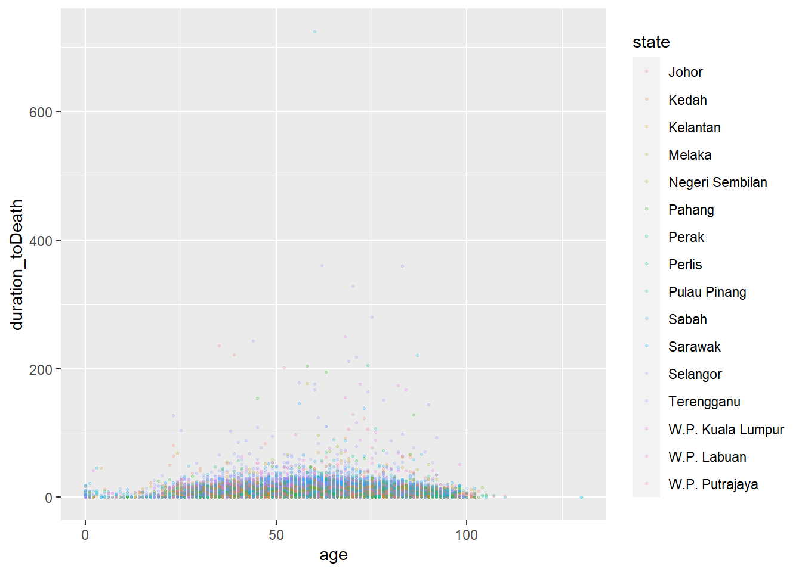
Groups
Data can be conveniently grouped for plotting by assigning a “grouping” column to an appropriate aesthetic within mapping = aes(), effective for both continuous and categorical values.
ggplot(data = c19_df,
mapping = aes(x = age, y = duration_toDeath, color = malaysian))+
geom_point(alpha = 0.5)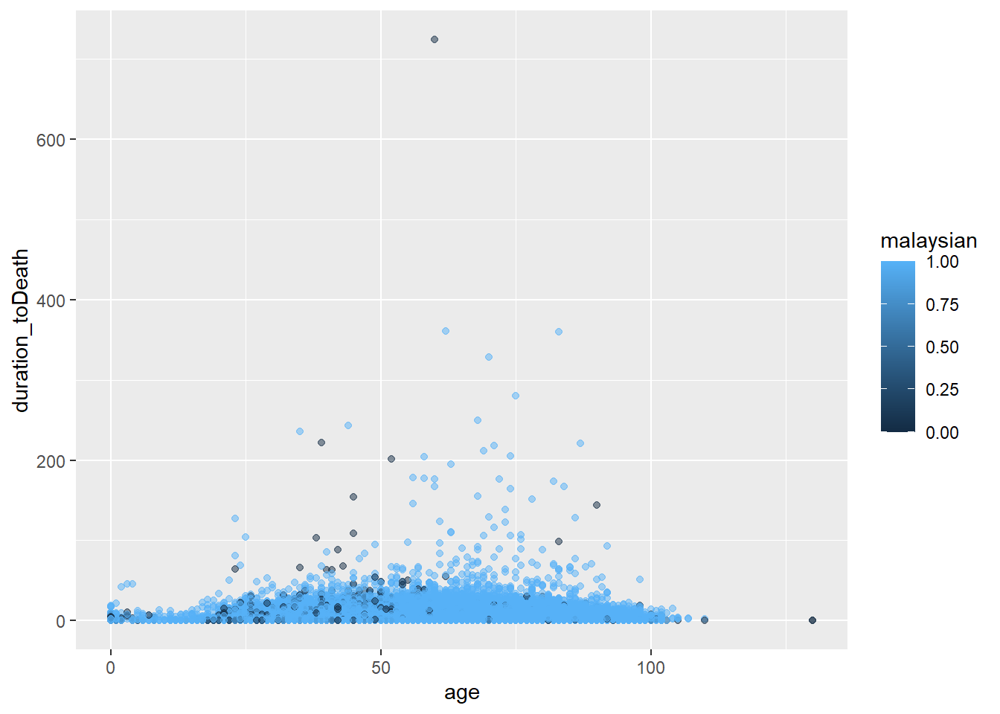
Please note that different grouping variables are required for different geoms- for instance geom_bar requires the fill argument instead ofcolour
Facets
Faceting is done with one of the following ggplot2 functions:
facet_wrap()To show a different panel for each level of a single variable. One example of this could be showing a different epidemic curve for each hospital in a region. Facets are ordered alphabetically, unless the variable is a factor with other ordering defined.
- You can invoke certain options to determine the layout of the facets, e.g.
nrow = 1orncol = 1to control the number of rows or columns that the faceted plots are arranged within.
facet_grid()This is used when you want to bring a second variable into the faceting arrangement. Here each panel of a grid shows the intersection between values in two columns. For example, epidemic curves for each hospital-age group combination with hospitals along the top (columns) and age groups along the sides (rows).
nrow and ncol are not relevant, as the subgroups are presented in a grid
Wrapping
# A plot with facets by district
ggplot(week_df, aes(x = date, y = deaths)) +
geom_col(width = 1, fill = "darkred") + # plot the count data as columns
theme_minimal()+ # simplify the background panels
labs( # add plot labels, title, etc.
x = "Date of report",
y = "COVID-19 deaths",
title = "COVID-19 deaths by states") +
facet_wrap(~state, scales = "free_y") # the facets are created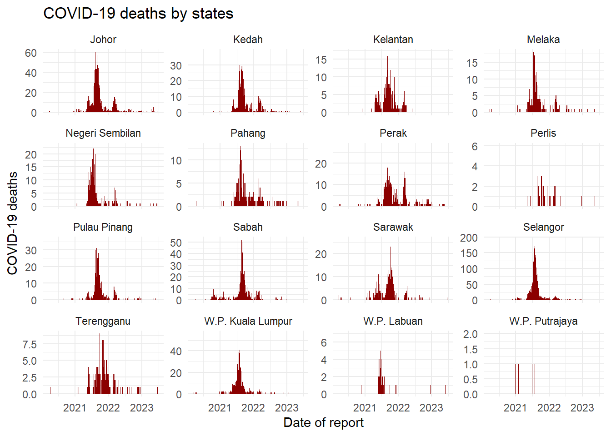
Gridding
# A plot with facets by district
ggplot(week_df, aes(x = date, y = deaths)) +
geom_col(width = 1, fill = "darkred") + # plot the count data as columns
theme_minimal()+ # simplify the background panels
labs( # add plot labels, title, etc.
x = "Date of report",
y = "COVID-19 deaths",
title = "COVID-19 deaths by states") +
facet_wrap(age_cat~state, scales = "free_y") # the facets are created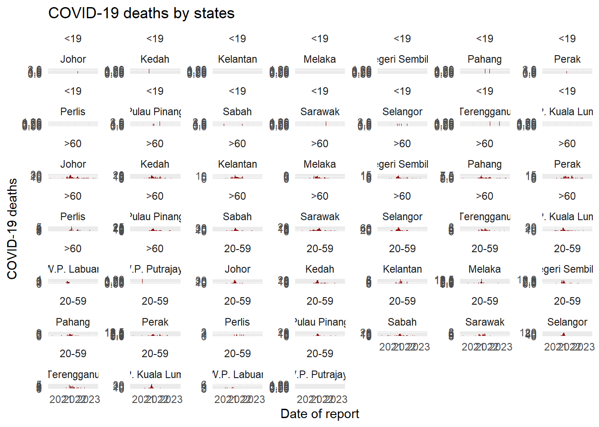
Themes
Complete themes
Add a complete theme theme_() function to make sweeping adjustments - these include theme_classic(), theme_minimal(), theme_dark(), theme_light() theme_grey(), theme_bw() among others
# scatterplot
age_death_plot <-
ggplot(data = c19_df, # set data
mapping = aes( # map aesthetics to column values
x = age, # map x-axis to age
y = duration_toDeath, # map y-axis to weight
color = state)
)+ # map color to age
geom_point(size = 0.5, alpha = 0.2) +
theme_minimal()Manual theme
Adjust each tiny aspect of the plot individually within theme()
Here are some especially common theme() arguments. You will recognize some patterns, such as appending .x or .y to apply the change only to one axis.
theme() argument |
What it adjusts |
|---|---|
plot.title = element_text() |
The title |
plot.subtitle = element_text() |
The subtitle |
plot.caption = element_text() |
The caption (family, face, color, size, angle, vjust, hjust…) |
axis.title = element_text() |
Axis titles (both x and y) (size, face, angle, color…) |
axis.title.x = element_text() |
Axis title x-axis only (use .y for y-axis only) |
axis.text = element_text() |
Axis text (both x and y) |
axis.text.x = element_text() |
Axis text x-axis only (use .y for y-axis only) |
axis.ticks = element_blank() |
Remove axis ticks |
axis.line = element_line() |
Axis lines (colour, size, linetype: solid dashed dotted etc) |
strip.text = element_text() |
Facet strip text (colour, face, size, angle…) |
strip.background = element_rect() |
facet strip (fill, colour, size…) |
An example
age_death_plot + # pre-defined theme adjustments
theme(
legend.position = "bottom", # move legend to bottom
plot.title = element_text(size = 30), # size of title to 30
plot.caption = element_text(hjust = 0), # left-align caption
plot.subtitle = element_text(face = "italic"), # italicize subtitle
axis.text.x = element_text(color = "red", size = 15, angle = 90), # adjusts only x-axis text
axis.text.y = element_text(size = 15), # adjusts only y-axis text
axis.title = element_text(size = 20) # adjusts both axes titles
) 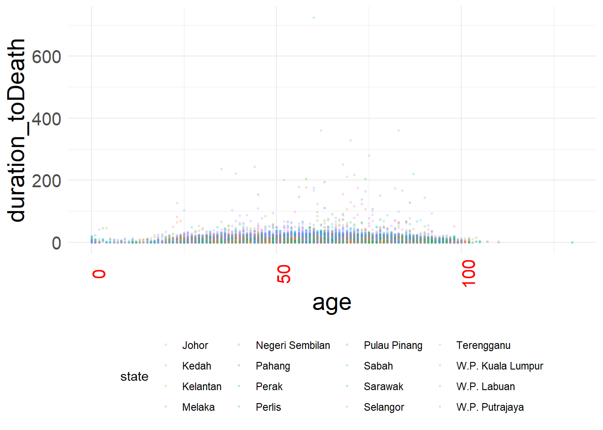
Piping
We can directly edit a dataset within a ggplot
ggplot(c19_df %>% filter(duration_toDeath<50),
mapping=aes(x=age, y=duration_toDeath, colour=age)) +
geom_point()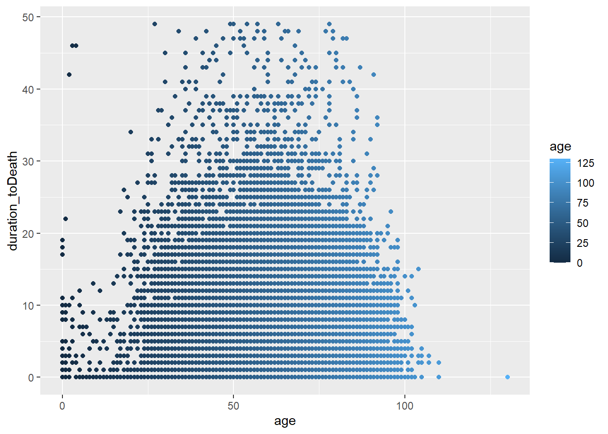
But they can developed into something much more complex
c19_df %>% # begin with linelist
select(c(malaysian, bid)) %>% # select columns
mutate(status=ifelse(malaysian==1&bid==1, "Non-Malaysian BID",
ifelse(malaysian==0&bid==1, "Malaysian BID",
ifelse(malaysian==1&bid==0, "Non-Malaysian Hospital death", "Malaysian Hospital death"))),
id=row_number()) %>%
select(-c(malaysian, bid)) %>%
pivot_longer( # pivot longer
cols = -id,
names_to = "name",
values_to = "status") %>%
mutate( # replace missing values
status = replace_na(status, "unknown")) %>%
ggplot( # begin ggplot!
mapping = aes(x = name, fill = status))+
geom_bar(position = "fill", col = "black") +
theme_classic() +
labs(
x = "Nationality and Death Status",
y = "Nationality and Death Status (proportion)"
)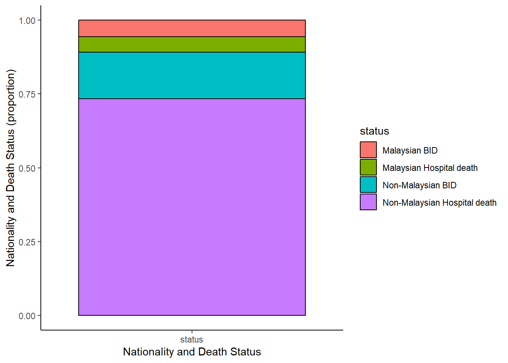
Labels
We can use labs() to provide character strings to these arguements:
x =andy =The x-axis and y-axis title (labels)
title =The main plot title
subtitle =The subtitle of the plot, in smaller text below the title
caption =The caption of the plot, in bottom-right by default
Here is a plot we made earlier, but with nicer labels:
# scatterplot
age_death_plot <-
ggplot(data = c19_df, # set data
mapping = aes( # map aesthetics to column values
x = age, # map x-axis to age
y = duration_toDeath, # map y-axis to weight
color = state)
)+ # map color to age
geom_point(size = 0.5, alpha = 0.2) +
labs(
title = "Age and Duration to Death distribution",
subtitle = "COVID-19 Pandemic in Malaysia, 2020-2023",
x = "Age (years)",
y = "Duration to death (days)",
color = "State",
caption = stringr::str_glue("Data as of {max(c19_df$date, na.rm=T)}"))
age_death_plot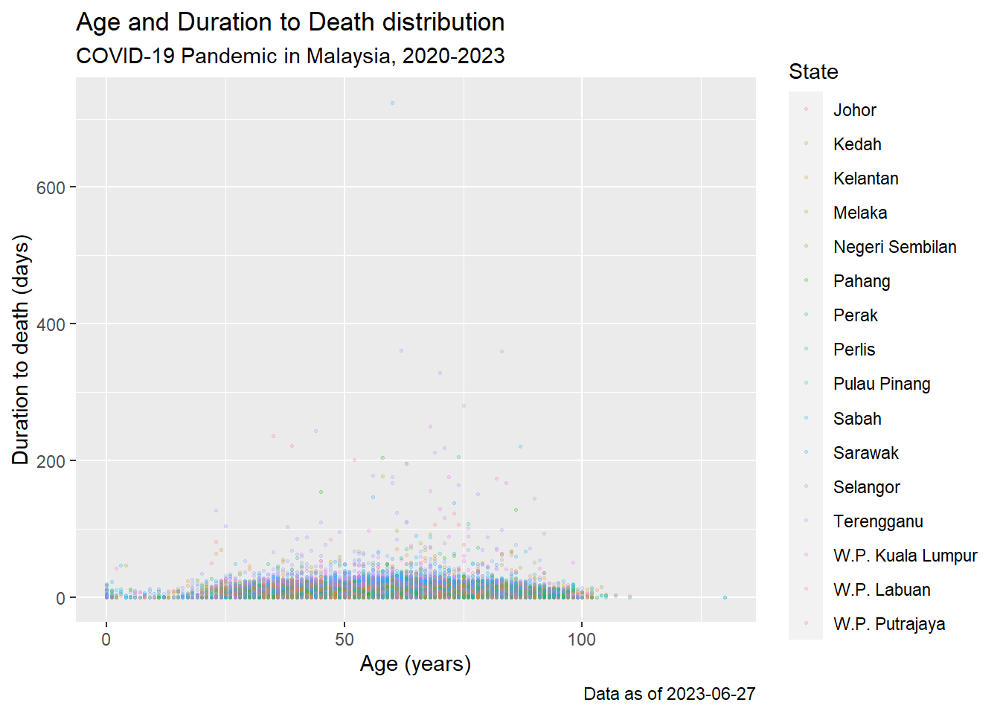
Saving and exporting plots
By default when a ggplot is called it will print in the Rstudio pane or below the if a markdown is used ( as is here). A plot can (and should) be written to a object name (as is done with a dataset). This ensures it is transfered to the global environment.
# define plot
age_death_plot <-
ggplot(data = c19_df,
mapping = aes(x = age, y = duration_toDeath))+ # set data and axes mapping
geom_point(color = "firebrick2", size = 0.5, alpha = 0.2) # set static point aesthetics
# print
age_death_plotA saved object can also be modified
age_death_plot +
geom_vline(xintercept = 60)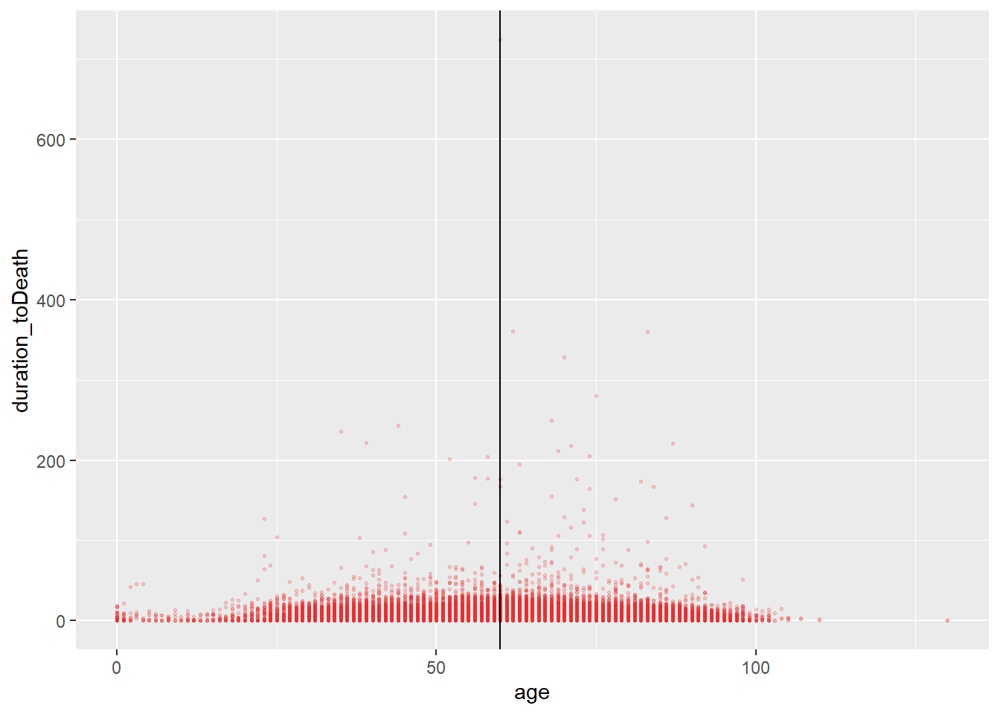
And exported using the ggsave() command. We do this by specifying the name of the plot object, then the file path and name with extension
For example: ggsave(my_plot, here("plots", "my_plot.png"))
Keep moving forward
Plenty of other really powerful viz to consider and we will hopefully get to cover these in another sessions. These include
Demographic pyramids
Likert Scalesm
Diagrams - Sankey
Phylogenetic trees
Network maps
Interactive plots
Choropleths and maps
Acknowledgements
Material for this lecture was borrowed and adopted from